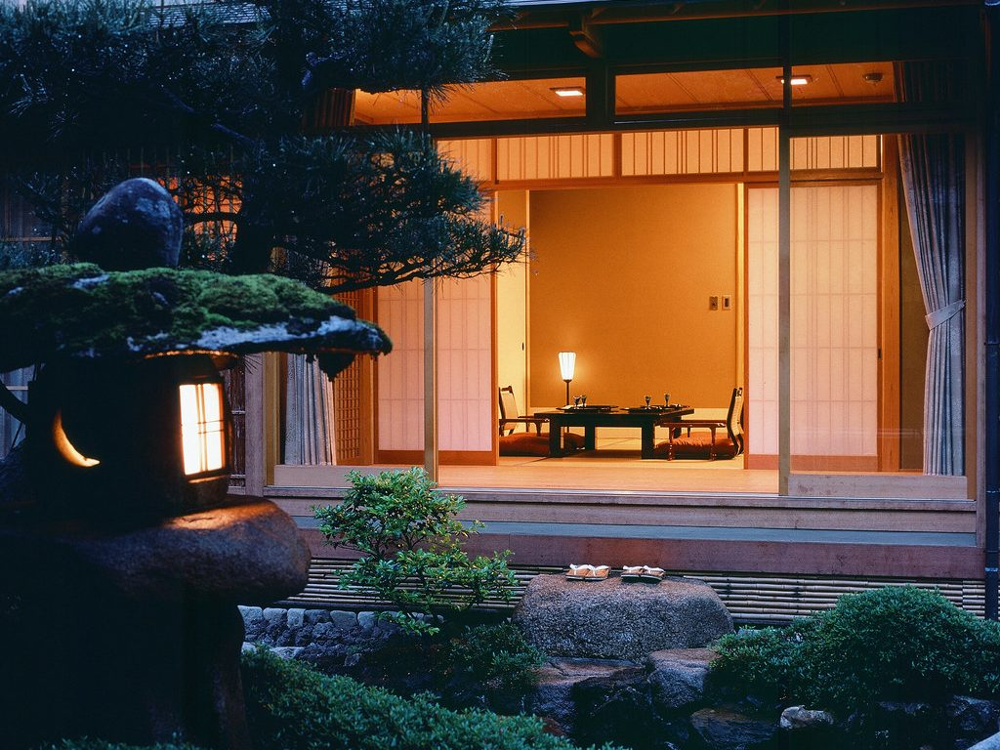
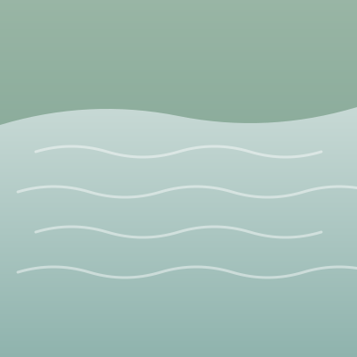

여행 둘째 날 · 11월 20일 금요일 · 지금 10:40
다음은 11시 15분 유후인노모리 기차
하카타역 3번 승강장 · 10시 55분까지 승강장으로

하카타 11:15 → 유후인 13:30
 유후인 맑음, 14도
유후인 맑음, 14도
오늘 남은 일정
14:30
료칸 유후인 하나야 체크인
유후시 유후인초 가와카미 1234 · 예약번호 HNY-4821

15:30
긴린코 호수 산책
평지 20분

18:30
료칸 저녁 식사
료칸 유후인 하나야

지은에게 전화
길을 잃었을 때